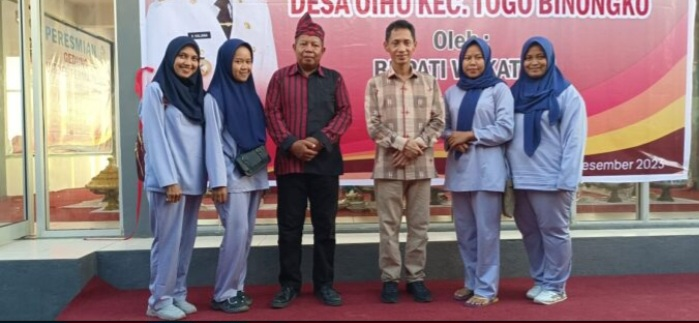

Bupati Wakatobi Resmikan Kafe Bumdes Permata Sari
Bupati Wakatobi, H. Haliana, S.E, meresmikan Kafe Bumdes Permata Sari sebagai bentuk dukungan terhadap pengembangan ekonomi lokal melalui UMKM desa. Kegiatan ini dihadiri perangkat desa, warga, dan pelaku usaha lokal.
Bupati Wakatobi Resmikan BUMDes Permata Sari di Desa Oihu
Oihu, Wakatobi – 28 Juli 2025 — Bupati Wakatobi, Haliana, SE, meresmikan Badan Usaha Milik Desa (BUMDes) Permata Sari di Desa Oihu, Kecamatan Tomia, dalam sebuah acara yang berlangsung meriah dan penuh semangat gotong royong.
Peresmian ini menjadi tonggak penting dalam pembangunan ekonomi desa, sebagai langkah nyata untuk meningkatkan kesejahteraan masyarakat melalui pengelolaan potensi lokal secara mandiri dan berkelanjutan.
Dorong Kemandirian Ekonomi Desa
Dalam sambutannya, Bupati Haliana menyampaikan bahwa pembentukan BUMDes merupakan upaya strategis dalam membangun desa dari bawah dan memperkuat ekonomi kerakyatan.
“Saya sangat mengapresiasi semangat masyarakat Desa Oihu yang luar biasa. BUMDes Permata Sari ini adalah contoh nyata bagaimana desa bisa mengelola potensi secara kolektif untuk kemajuan bersama,†ujar Bupati Haliana dalam pidatonya.
Unit Usaha Prioritas
BUMDes Permata Sari akan mengelola berbagai unit usaha, seperti usaha simpan pinjam, pengelolaan hasil pertanian, pengolahan ikan kering, dan layanan wisata lokal. Beberapa unit usaha bahkan telah mulai beroperasi dan menunjukkan hasil awal yang menggembirakan.
Direktur BUMDes, La Ode Arifin, menyampaikan bahwa pendirian BUMDes ini merupakan hasil musyawarah desa dan partisipasi aktif seluruh lapisan masyarakat. “Kami ingin BUMDes menjadi tulang punggung perekonomian desa yang transparan dan berkelanjutan,†katanya.
Antusiasme Masyarakat
Acara peresmian dihadiri oleh camat Tomia, perangkat desa, tokoh adat, ibu-ibu PKK, karang taruna, dan masyarakat umum. Mereka menyambut positif kehadiran BUMDes dan berharap program ini bisa membuka lapangan kerja baru bagi warga lokal.
“Kami bangga desa kami kini punya BUMDes. Semoga ke depan bisa bantu kami petani dan nelayan menjual hasil dengan harga yang lebih baik,†ujar Wa Ode Hapsah, salah satu warga Desa Oihu.
Dukungan Pemerintah Kabupaten
Pemerintah Kabupaten Wakatobi akan terus memberikan pendampingan dan pelatihan kepada pengelola BUMDes agar mampu menjalankan usaha dengan profesional dan akuntabel.
“Kami tidak hanya datang untuk meresmikan, tapi juga akan kawal proses pendampingan agar BUMDes ini benar-benar memberi manfaat jangka panjang,†tambah Bupati Haliana.
Penutup
Peresmian BUMDes Permata Sari menandai langkah awal Desa Oihu dalam membangun kemandirian ekonomi berbasis potensi desa. Diharapkan ke depan, desa ini bisa menjadi contoh bagi desa-desa lain di Wakatobi dalam mengembangkan ekonomi lokal secara inovatif dan inklusif.